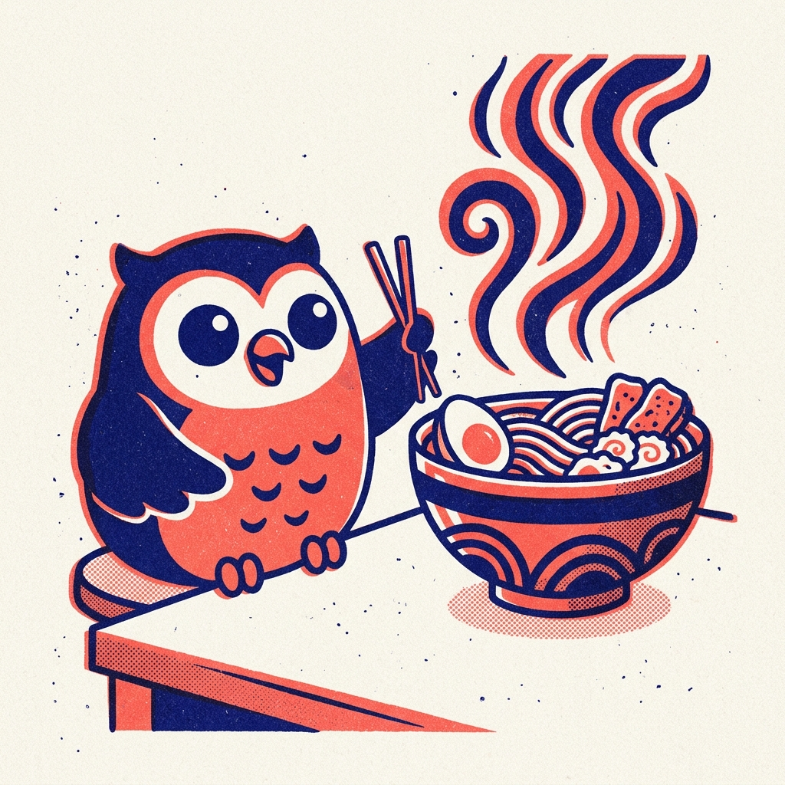
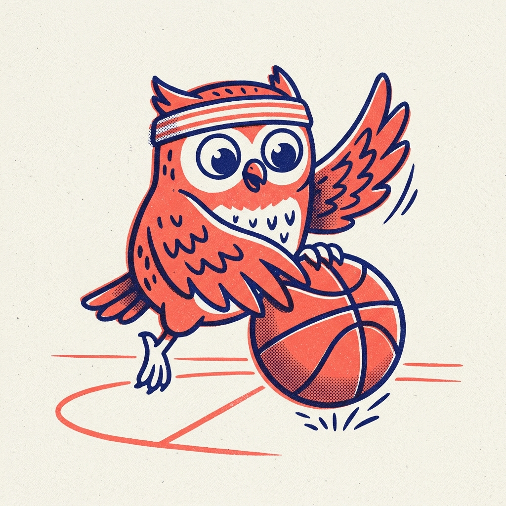
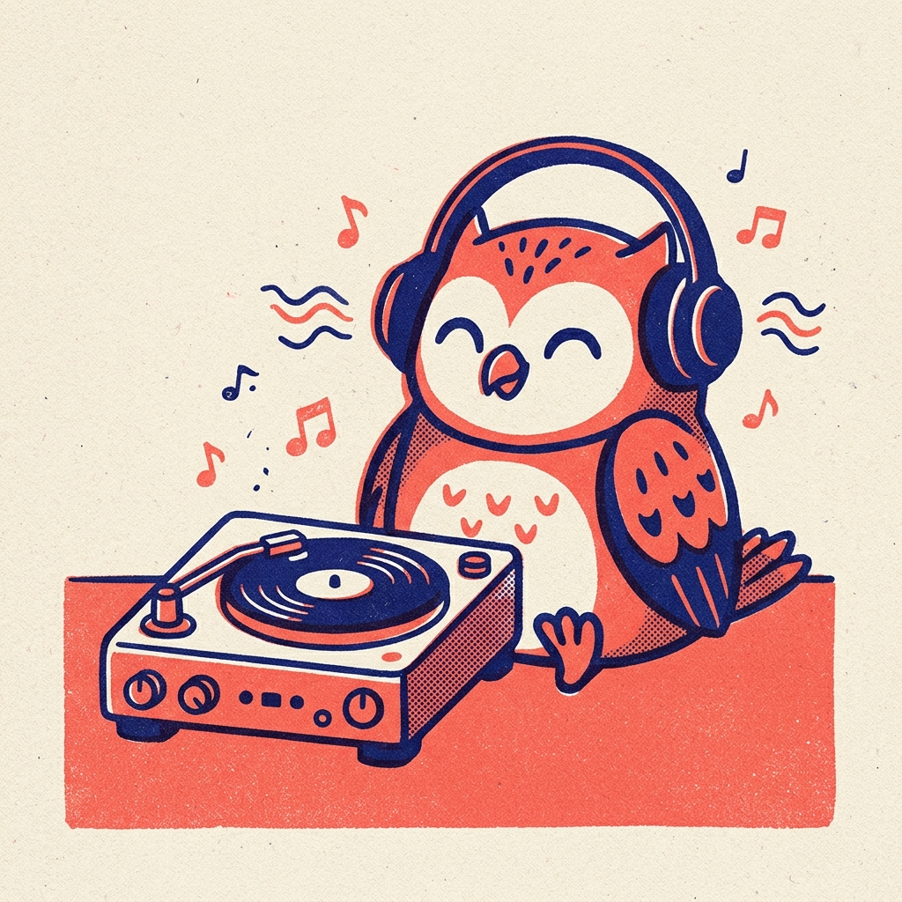
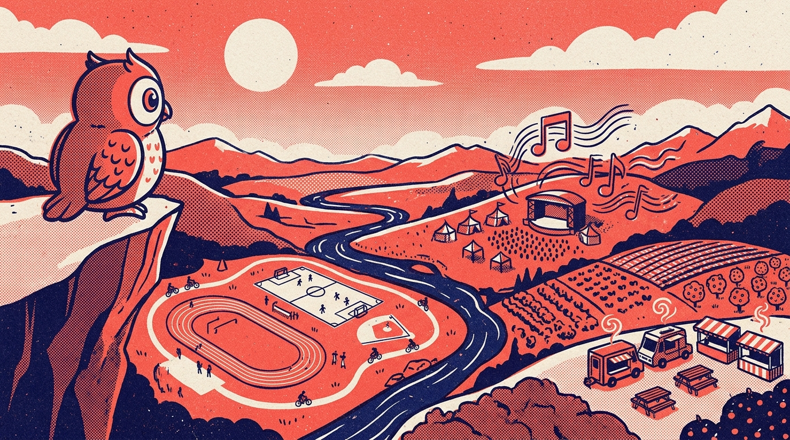
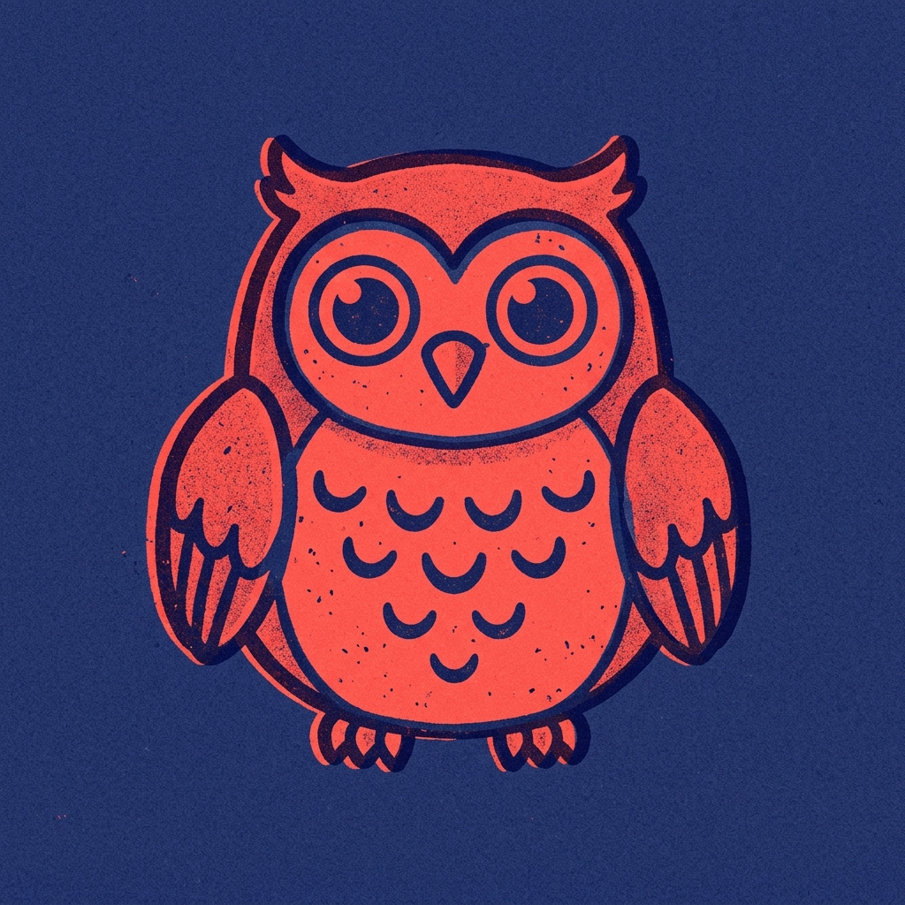

Müzik
Günün her anında bana eşlik eden ritimler ve melodiler, antrenmanlarımdan çalışma saatlerime kadar vazgeçilmez motivasyon kaynağım.

Sporun dinamizmini, hareket etmenin enerjisini ve sağlıklı bir yaşam felsefesini hayatımın merkezine koyuyorum.
Beni Tanıyın
Merhaba, ben Yusuf; hayatımın merkezinde spor ve hareket dolu bir yaşam tarzı bulunuyor. Günlük yaşantımda beni en çok motive eden şey düzenli spor yapmak ve hedeflerime doğru disiplinle ilerlemek. Enerjimi daima yüksek tutarak kendimi her alanda geliştirmeye ve yeni deneyimler kazanmaya odaklanıyorum.

Günün her anında bana eşlik eden ritimler ve melodiler, antrenmanlarımdan çalışma saatlerime kadar vazgeçilmez motivasyon kaynağım.

Fiziksel dayanıklılığımı artıran, zihnimi berraklaştıran ve bana daima disiplin kazandıran en büyük tutkum.

Spor sonrası vücudu dengeli besleyen lezzetli tarifler ve farklı mutfak kültürlerini denemek benim için büyük bir keyif.
Benimle spor, projeler veya iş birlikleri hakkında iletişime geçmek için doğrudan e-posta gönderebilirsiniz: